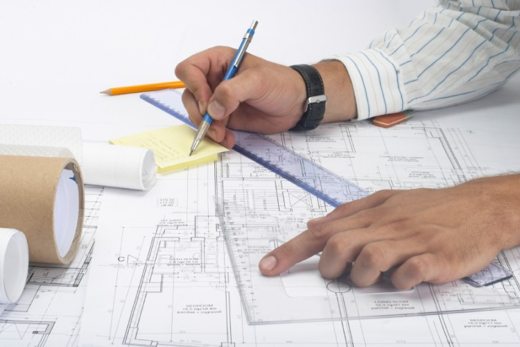
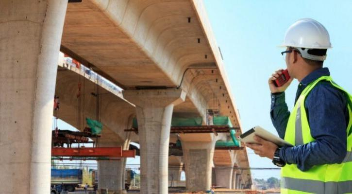
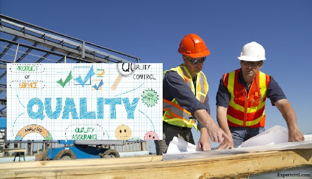
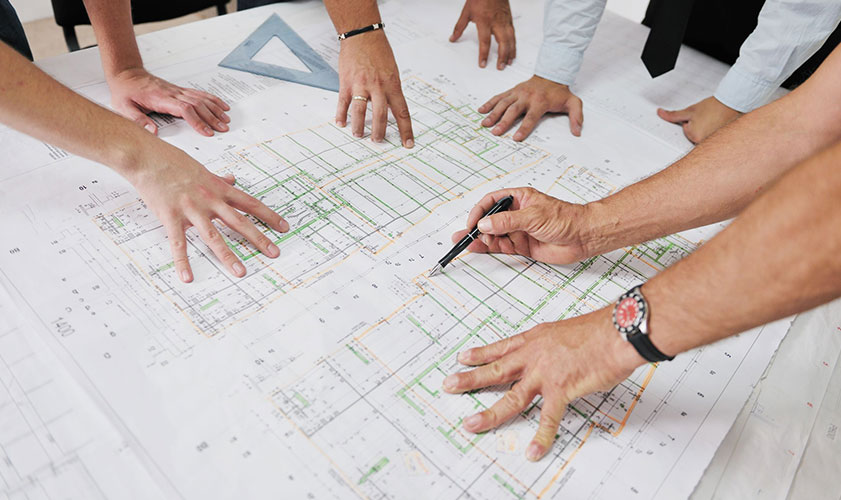
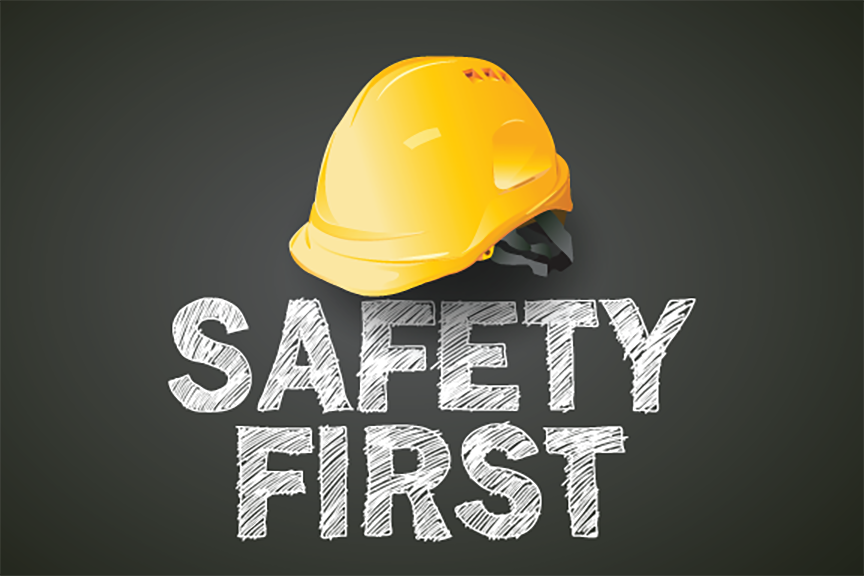
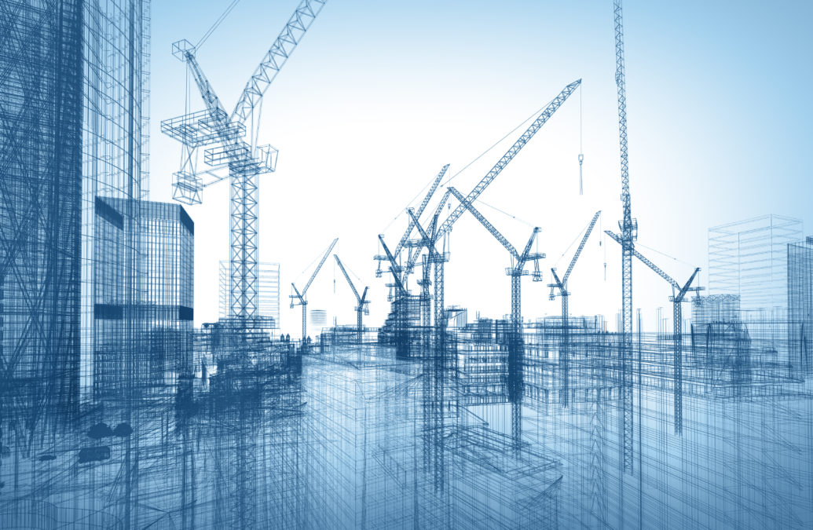

Detailed Project Engineering
Detailed Project Engineering is done after approval of Techno-economic feasibility of project. It involves activities of undertaking different types of surveys, investigations, inventory collection, preparation of drawings & detailed project cost, Bid document preparation along with detailed specifications of work, finalization of Resettlement & Rehabilitation plans. This activity involves undertaking feasibility studies, Traffic & Transportation studies, Preparation of Traffic Demand estimates & Traffic Dispersal schemes, Engineering surveys, Road & Pavement investigations, investigation for Bridges & structures, Hydraulic & Hydrological investigations, Geotechnical investigations & Sub-soil exploration & Material investigations, Road safety audit. Detailed design of pavement, bridges, drainage structures, water/earth retaining structures & other Civil Engineering structures. It also includes detailed environmental, social & poverty impact studies, the Initial Environmental Examination (IEE) report including Environmental Monitoring & Management Plan (EMMP) is prepared with wide public consultation & recommendations.
Survey & Investigation Works
RSI has inhouse latest equipments & softwares to undertake all types of Engineering surveys as required in Highway/Bridge/Transportation & Traffic/Hydrological engineering. RSI undertakes Topographical survey using latest techniques of GPS & Total station for high precision survey. Traffic survey, Road/Pavement condition survey, Hydraulic survey etc. RSI undertakes pavement investigations, Geo-technical Investigations & sub-soil Exploration, investigations for Bridges & structure, Hydraulic & Hydrological investigations & material investigations.

Feasibility Studies
RSI undertakes feasibility studies which includes preliminary survey, relevant data collection & site investigations, possible alternatives engineering solutions & their corresponding tentative costs are evaluated for finalization of proposal. This study also includes Socio economic profile study, Road safety audit, indicative design standards, specifications & methodologies, Relevant surveys & analysis, outline proposal for rehabilitation, Identification of location & type of structures before finalization, initial environmental examination, social & poverty impact studies, preliminary land acquisition/resettlement requirement & impact.
Techno-Economic Feasibility Studies
Before finalizing the project for its implementation, studies are conducted to ensure the technical, environmental, social & financial viability of the project. Cost benefit analysis has become very important in new PPP pattern being adopted in infrastructure development where the benefits are to be evaluated for a particular period of time.
Construction Supervision
Construction Supervision services are undertaken to ensure the works are executed of high qualitative standards in accordance with the design & specifications, Other services given as supervision consultants includes intermittent cost-monitoring during execution, supervising in all matters concerning safety and care of the work including environmental aspects & labour welfare. Regular inspections of the contractor’s equipment, plant, machinery installations, housing & medical & mandatory facilities etc. ensuring their adequacy as per contract’s condition. Evolving & implementing of quantity & quality control procedures; evolving criteria for the acceptance of works; assistance to the client in the evaluation of contractor’s claims. Monitoring physical & financial progress of work using computer aided project management techniques & management information system, preparing periodical project budget & estimates, preparing revised estimates, if required. Preparation/Supervision of “As Built” drawings & project completion reports. Prepare maintenance manual outlining routines & procedures. To review the independent safety audit & support/incorporate feasible minor modifications to ensure safety.
Quality Assurance
RSI undertakes systematic monitoring & evaluation of the various aspects of a project, service or facility to maximize the probability that the standards of quality are being maintained as they are meant for. QA includes regulation of the quality of raw materials, assemblies, products & components, methodologies adopted for construction, management practice, inspection & reporting processes.
QA is undertaken on the principles that the output should be suitable for the intended purpose & that the mistakes should be eliminated.


Project Management Consultancy
PMC includes detailed review of drawings along with the supporting data of surveys & various technical investigation. As PMC to inspect the construction works in respect of quality, progress, methodology adopted for construction & conformity of work execution as per sanctioned scope of work, preparation of inspection reports/investigation & testings done. To describe in reasonable details the lapses, defects or deficiencies observed in construction. To ensure conducting of tests conforming to Good industry practice for quality assurance. PMC constantly reviews progress of construction & identifies potential delay in advance suggesting remedial measures. PMC analyses & suggest for any measures to be taken for ensuring safety. PMC shall take actions to obtain completion certificate. And shall aid & advise for preparing operation & maintenance manual.
Safety Audit
Safety requirements aim at reduction in injuries, loss of life, damage to property owing to accidents on highway , safety requirements apply to all phases of development, construction, operation & maintenance with emphasis on identification of factors responsible for accidents, consideration of mitigating such factors & implementation of appropriate remedial measures associated with traffic management & regulation such as road signs, pavement marking, traffic control device, roadside furniture, highway design elements, enforcement & emergency response.
Road safety audit is carried out by compilation & analysis of accident datas & design details of drawings of horizontal & vertical alignments; sightlines, layout of intersection, interchanges, road cross -section; bridges & culverts; site drains; provision for parked vehicles, slow moving vehicles & pedestrians; bus-bay; truck lay-bys & other incidental or consequential information. The potential causes such as faulty geometric features, improper/insufficient road furniture, pavement conditions etc responsible for accidents need to be investigated in detail & accordingly appropriate cost-effective remedial measures are suggested for compliance.


The Construction Company
We belive that creating infrastructure is both a human and a technical challenge. That's what drives us. Drawing on our team's experience and knowledge, we are driven to offer comperhensive construction services that combine the best of skills and technical expertise. We are specialist civil engineering and construction company known for our quality, technology mastery and domain expertise with which we tackle the most complex of projects.